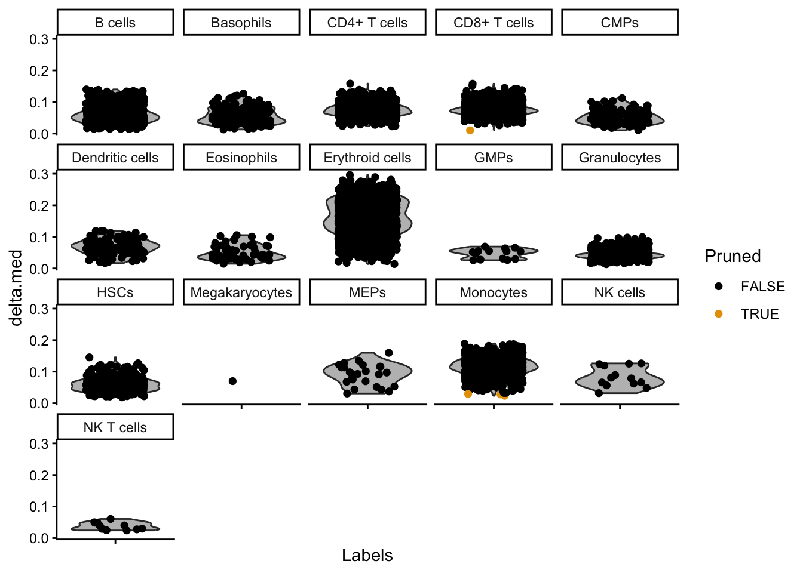
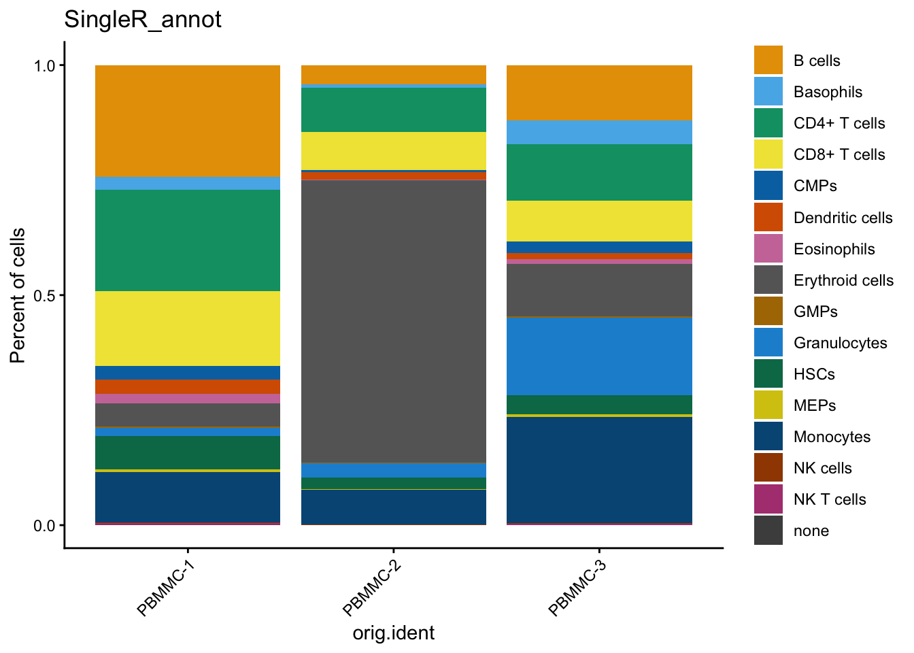
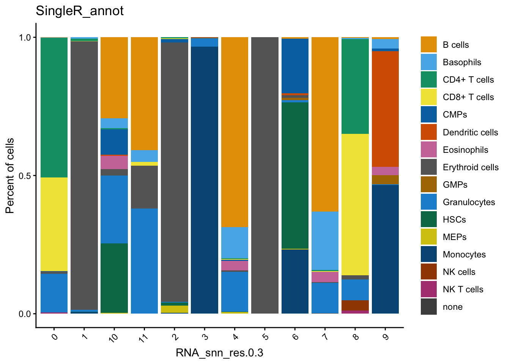

'SeuratObject' was built under R 4.5.0 but the current version is
4.5.1; it is recomended that you reinstall 'SeuratObject' as the ABI
for R may have changed
Attaching package: 'SeuratObject'
The following objects are masked from 'package:base':
intersect, t
The following object is masked from 'package:utils':
findMatches
The following objects are masked from 'package:base':
expand.grid, I, unname
Loading required package: IRanges
Attaching package: 'IRanges'
The following object is masked from 'package:sp':
%over%
Loading required package: GenomeInfoDb
Loading required package: Biobase
Welcome to Bioconductor
Vignettes contain introductory material; view with
'browseVignettes()'. To cite Bioconductor, see
'citation("Biobase")', and for packages 'citation("pkgname")'.
Attaching package: 'Biobase'
The following object is masked from 'package:MatrixGenerics':
rowMedians
The following objects are masked from 'package:matrixStats':
anyMissing, rowMedians
Attaching package: 'SummarizedExperiment'
The following object is masked from 'package:Seurat':
Assays
The following object is masked from 'package:SeuratObject':
Assays
The following objects are masked from 'package:celldex':
BlueprintEncodeData, DatabaseImmuneCellExpressionData,
HumanPrimaryCellAtlasData, ImmGenData, MonacoImmuneData,
MouseRNAseqData, NovershternHematopoieticData
In the last exercise we saw that probably clustering at a resolution of 0.3 gave the most sensible results. Let’s therefore set the default identity of each cell based on this clustering:
seu<-Seurat::SetIdent(seu, value =seu$RNA_snn_res.0.3)
Note
From now on, grouping (e.g. for plotting) is done by the active identity (set at @active.ident) by default.
During cell annotation we will use the original count data (not the integrated data):
Based on expression of sets of genes you can do a manual cell type annotation. If you know the marker genes for some cell types, you can check whether they are up-regulated in one or the other cluster. Here we have some marker genes for two different cell types:
Based on the same principle, we can also annotate cell cycling state. The function CellCycleScore uses AddModuleScore to get a score for the G2/M and S phase (the mitotic phases in which cell is cycling). In addition, CellCycleScore assigns each cell to either the G2/M, S or G1 phase.
First we extract the built-in genes for cell cycling:
Based on your application, you can try to regress out the cell cycling scores at the step of scaling. Reasons for doing that could be:
Merging cycling and non-cycling cells of the same type in one cluster
Merging G2/M and S phase in one cluster
Note
Note that correcting for cell cycling is performed at the scaling step. It will therefore only influence analyses that use scaled data, like dimensionality reduction and clustering. For e.g. differential gene expression testing, we use the raw original counts (not scaled).
Here, we choose not to regress out either of them. Because we are looking at developing cells, we might be interested to keep cycling cells seperated. In addition, the G2/M and S phases seem to be in the same clusters. More info on correcting for cell cycling here.
Cell type annotation using SingleR
To do a fully automated annoation, we need a reference dataset of primary cells. Any reference could be used. The package scRNAseq in Bioconductor includes several scRNAseq datasets that can be used as reference to SingleR. One could also use a reference made of bulk RNA seq data. Here we are using the a hematopoietic reference dataset from celldex. Check out what’s in there:
Warning: Groups with fewer than two datapoints have been dropped.
ℹ Set `drop = FALSE` to consider such groups for position adjustment purposes.
Warning in max(data$density, na.rm = TRUE): no non-missing arguments to max;
returning -Inf
Warning: Computation failed in `stat_ydensity()`.
Caused by error in `$<-.data.frame`:
! replacement has 1 row, data has 0
Warning in min(x): no non-missing arguments to min; returning Inf
Warning in max(x): no non-missing arguments to max; returning -Inf
Warning in min(d[d > tolerance]): no non-missing arguments to min; returning
Inf

There are some annotations that contain only a few cells. They are usually not of interest, and they clogg our plots. Therefore we remove them from the annotation:
In order to visualize it in our UMAP, we have to add the annotation to seu@meta.data:
seu$SingleR_annot<-singleR_labels
We can plot the annotations in the UMAP. Here, we use a different package for plotting (dittoSeq) as it has a bit better default coloring, and some other plotting functionality we will use later on.
We can check out how many cells per sample we have for each annotated cell type:
dittoSeq::dittoBarPlot(seu, var ="SingleR_annot", group.by ="orig.ident")

Exercise
Compare our manual annotation (based on the set of T cell genes) to the annotation with SingleR. Do they correspond?
You can for example use the plotting function dittoBarPlot to visualize the cell types according to cluster (use RNA_snn_res.0.3 in stead of orig.ident))
Answer
We can have a look at the mean module score for each SingleR annotation like this:
dittoSeq::dittoBarPlot(seu, var ="SingleR_annot", group.by ="RNA_snn_res.0.3")

Here, you can see that cluster 0 and 8 contain cells annotated as T cells (CD4+ and CD8+).